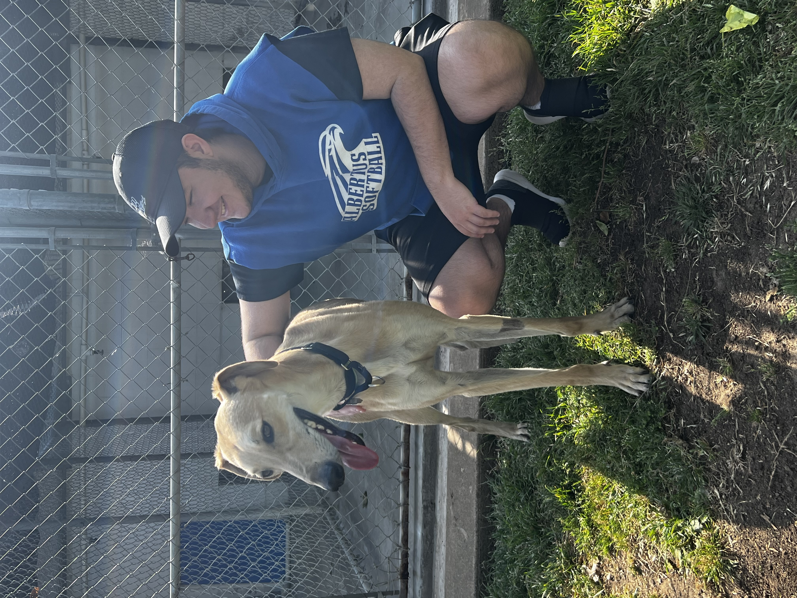

Ethan Shura

Summary
As a college graduate with a Bachelor's degree in Communications and a keen eye for photography, I am embarking on my journey to become a full-stack web developer through self-paced learning and a Udemy course. Proficient in C++ and Java, I am currently honing my skills in HTML, CSS, and JavaScript, driven by my fascination with the internet and my desire to create captivating websites. Eager to gain hands-on experience, I am currently working on my first independent web development project
Education
- Bachelor's of Arts, Communications - Albertus Magnus College (2016-2020)
Work Experience
Associate - Infosys Limited
June 2022 - June 2023
-
Create, develop, and monitor APIs through the entire lifecycle.
-
Provide critical support to other teams and teammates.
-
Adapt to rapidly changing environments and requirements.
Software Engineer - Revature
April 2022 - June 2022
-
Attended daily training sessions with punctuality and enthusiasm.
-
Completed and submitted functioning projects in Java and MuleSoft.
-
Succeeded in team environments and efficently met deadlines.
Graduate Residence Hall Director - Albertus Magnus College
June 2020 - July 2021
-
Supervised a team of 20 Resident Assistants.
-
Provided and planned thorough training on policy, procedures, and mental health awareness.
-
Curated social media efforts on Instagram and Facebook.
Skills
- Java: ⭐️⭐️⭐️
- MuleSoft: ⭐️⭐️⭐️
- Organization: ⭐️⭐️⭐️⭐️
- Teamwork: ⭐️⭐️⭐️⭐️⭐️
- Communication: ⭐️⭐️⭐️⭐️⭐️
- Leadership: ⭐️⭐️⭐️⭐️⭐️
Achievements
Student Orientation Coordinator
May 2019 - January 2020
-
fter a long interview process, I was selected to be the Student Orientation Coordinator of the First-Year Orientation for the Class of 2023. I was in charge of coordinating training efforts, planning the theme, and welcoming new faces.